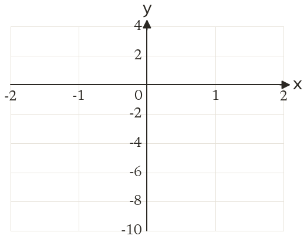
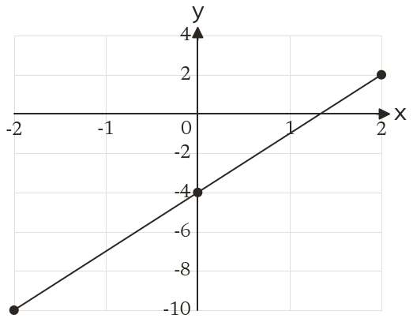

Westonbirt Maths · Linear Graphs and y = mx + c
Drawing Linear Graphs
Name: ______________________ Date: ____________
1
Complete a table for y = 3x - 4 using x = -2 to 2. Choose a y scale, then draw the line.
2
Do (2, -1) and (-1, 8) lie on the line y = 5 - 3x? Show how you know.
3
A table for y = 6x + 2 gives y from -16 to 20. Which y scale suits: steps of 1, 4 or 20? Explain.
4
Which of these points is not on y = 2x + 5: (-3, -1), (0, 5), (2, 8), (4, 13)?
5
A table for y = 3x + 2 has (1, 6) in it. How would the graph show this mistake?
Ext
Use your graph from question 1 to estimate where y = 3x - 4 crosses the x-axis. Check by solving.

